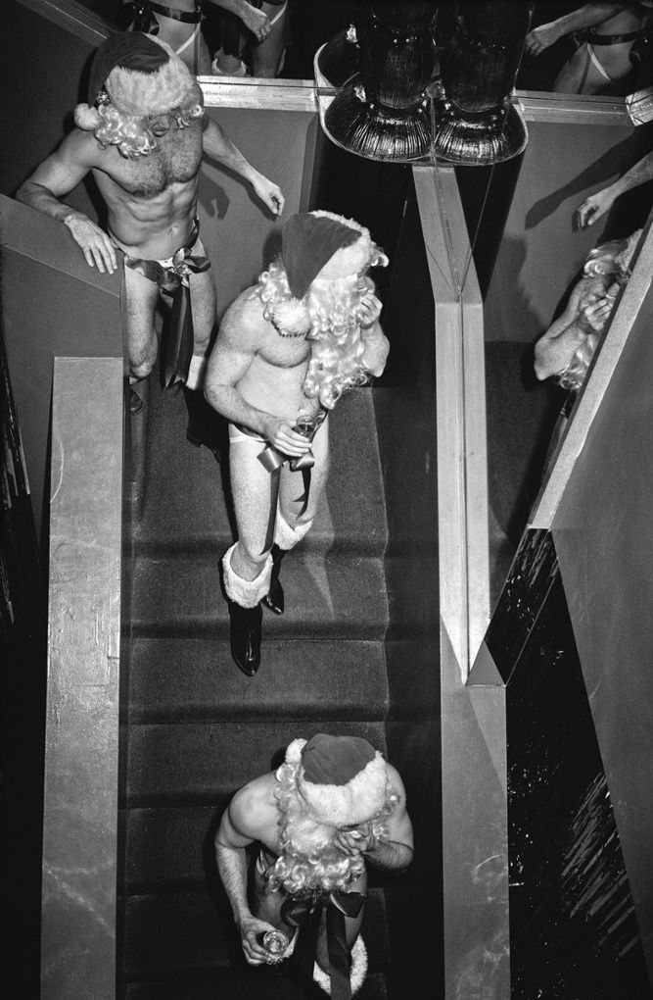
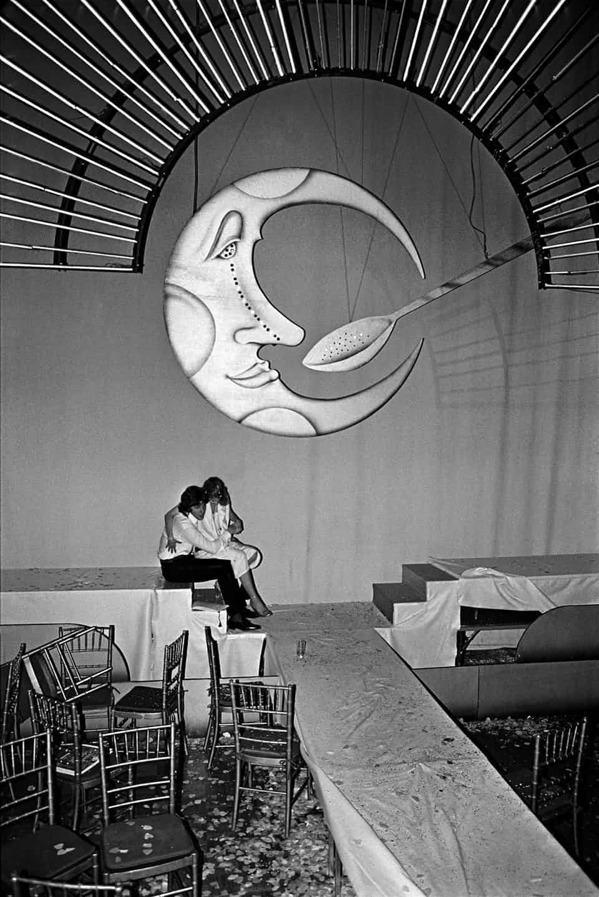
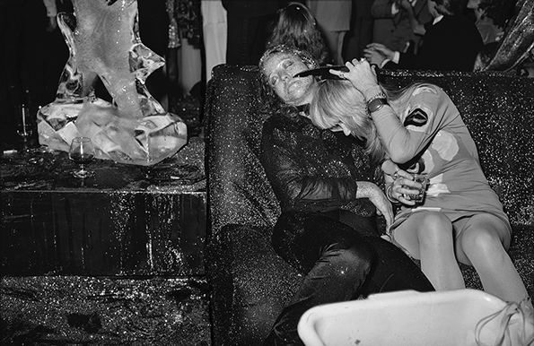

Dalla fama mondiale alla rovina in soli 33 mesi
Da teatro a discoteca
L'architetto italo-americano Eugene De Rosa progettò il locale, che fu inaugurato nel 1927 con il nome di Gallo Opera House (successivamente Gallo Theatre), in onore del suo proprietario. L'attività teatrale continuò altalenante fino al maggio 1940, sotto il nome di di New Yorker e Theatre of Music. Dopo essere rimasto vuoto per tre anni, nel 1943 il locale fu acquistato dalla CBS e ribattezzato Studio 52, in quanto era la 52ª proprietà immobiliare acquisita dall'emittente. Negli anni '40, fu utilizzato come set per trasmissioni radiofoniche e televisive. Tuttavia, nel 1976, la rete decise di trasferire la maggior parte delle trasmissioni all'adiacente Ed Sullivan Theater e al CBS Broadcast Center sulla 57ª strada, mettendo così in vendita lo Studio 52. Nel 1977, gli imprenditori Steve Rubell e Ian Schrager divennero i nuovi proprietari del locale, grazie al sostegno finanziario di Jack Dushey. Assunsero Scott Bromley come architetto, Ron Doud come interior designer e Brian Thompson come lighting designer. Jules Fisher e Paul Marantz, noti progettisti di illuminazione, contribuirono a creare l'atmosfera della pista da ballo, insieme alle scenografie e alle luci mobili, utilizzando i già esistenti impianti di illuminazione.
InterniLo stile eccentrico
Il club si caratterizzava per le sue provocazioni e per l'eccentricità delle serate proposte. Rubell e Schrager avevano l'intento di offrire "la festa più grande del mondo" ogni sera, e di sorprendere Manhattan con i loro eccessi edonistici. Il locale era sempre pervaso da musica ad alto volume, scenografie suggestive (come l'immagine di una falce di luna con polvere scintillante) e serate che ogni sabato riservavano nuove sorprese e stravaganze uniche. Nel culmine di ogni serata, un "uomo sulla luna" scendeva dall'alto e offriva al pubblico il contenuto luccicante di un cucchiaino d'argento. Lo Studio 54 si distinse immediatamente come un luogo in cui chiunque poteva essere protagonista, indipendentemente dalla propria classe sociale, trovandosi fianco a fianco con personaggi del jet set internazionale. Rubell voleva offrire ai clienti un'atmosfera "armoniosa" e piena di giovani sessualmente disponibili, lontana dalla pressa e dai paparazzi. Ai pochi giornalisti ammessi veniva vietato scattare foto senza autorizzazione, e quelle scattate non potevano essere pubblicate a meno che i soggetti non fossero in posa e avessero dato il consenso esplicito. Si sentiva parlare di scene orgiastiche e di favolose feste a tema. La giornalista Marjorie Daphnis, che riuscì a entrare nel club nel 1979, raccontò che all'interno del locale ogni tipo di eccesso era permesso.
Foto di Tod Papageorge
I fortunati che vi accedevano dovevano pagare una tariffa molto alta e potevano vedere camerieri con corpi atletici e affascinanti muoversi quasi nudi tra i tavoli dei clienti, indossando solo un piccolo indumento per coprire i genitali. Spesso i camerieri venivano oggetto di avances da parte dei partecipanti, e molti di loro consumavano rapporti sessuali sul posto. Lo Studio 54 fu una delle prime discoteche ad adottare una rigorosa selezione all'ingresso delle persone, una pratica comune nei club notturni moderni, basata sull'aspetto estetico e sul gusto nel vestire. Era spesso Steve Rubell a selezionare personalmente i pochissimi fortunati che potevano entrare tra la folla. Al fine di promuovere l'inclusione sociale, il locale aveva una politica d'ingresso che mirava a garantire che almeno il 20% dei clienti fosse gay e almeno il 10% lesbica o transgender. Per questi motivi, l'artista Andy Warhol, un frequentatore abituale dello Studio 54, descrisse il suo strepitoso successo come "una dittatura all'ingresso e una democrazia sulla pista da ballo".
Foto di Bill Bernstein
Il locale fu inaugurato nella serata del 26 aprile 1977, ma il suo periodo di splendore durò solo tre anni. I problemi legali emersero già un mese dopo l'apertura, quando la Liquor Authority dello Stato di New York sospese l'attività del locale poiché mancava la licenza per servire alcolici. Prima di questo intervento, Rubell e Schrager avevano ottenuto permessi giornalieri per il catering (il locale era ufficialmente gestito da una società chiamata Broadway Catering), che formalmente consentivano la vendita di bevande alcoliche, ma erano riservati solo a matrimoni o eventi politici. L'epoca dorata dello Studio 54 ebbe una fine brusca nel 1980, quando il proprietario Rubell fu arrestato per possesso di droga e frode fiscale. Nel dicembre 1978, in un'intervista con la stampa, Rubell aveva dichiarato di aver guadagnato 7 milioni di dollari nel primo anno di attività, sostenendo che solo la mafia aveva guadagnato di più. Questa affermazione attirò l'attenzione dell'Internal Revenue Service, che dopo un'indagine perquisì il locale e scoprì un'evasione fiscale di 2,5 milioni di dollari, oltre al possesso di grandi quantità di droga.
La fine
La notte tra il 2 e il 3 febbraio 1980 fu l'ultima. Rubell e Schrager rganizzarono la loro ultima festa. Il titolo era tutto un programma: The End of Modern Day Gomorrah. La serata era più intima del solito, ma tra i 2000 invitati c’era gente come Richard Gere, Reggie Jackson, Andy Warhol, Lorna Luft, Sylvester Stallone, Diana Ross e Liza Minneli, che ovviamente si è esibita nella sua New York, New York. Rubell ha salutato i suoi ospiti con un discorso commovente. Gli ospiti piangevano, Bianca Jagger non riusciva a smettere di abbracciarlo. Jack Martin, un giornalista del New York Post, ha incontrato Rubell la mattina dopo. «Era confuso, ma si vedeva che aveva accettato la realtà. Era stata una festa d’addio, ma la gente si è comunque divertita moltissimo. Gli siamo stati accanto fino all’ultimo momento, quando è salito in macchina per andare a scontare la pena». La festa era finita.
Foto di Tod Papageorge